Bench greybox: mismo plan, distinto plano base (9 imágenes)
Comparativa por escena: greybox 3D (clay/depth) contra el baseline del SVG
dibujado a mano, todo con la misma cláusula de estilo Magic.
01_calle
base clay (greybox 3D)
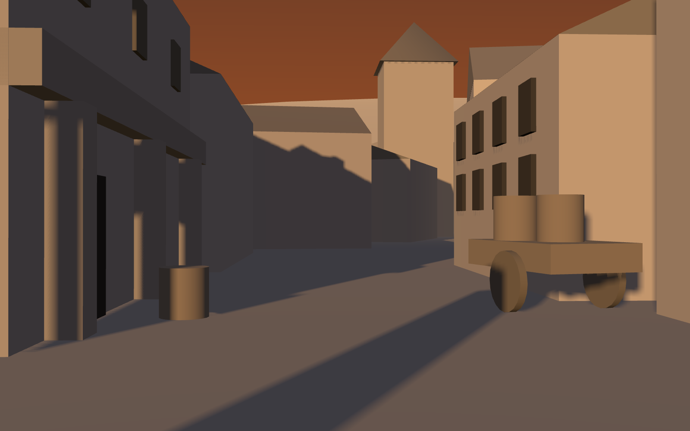
SVG a mano → gpt-image-2 (baseline)
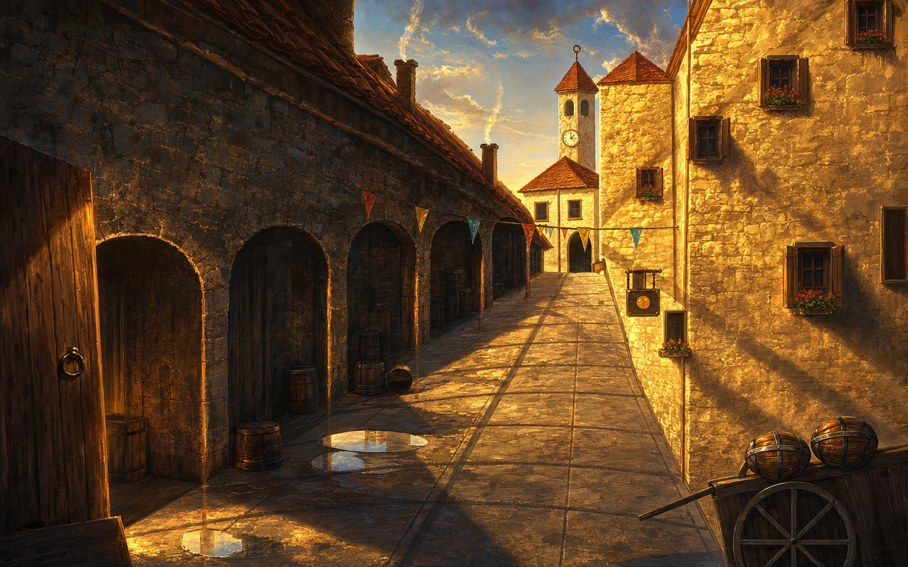
clay → gpt-image-2
0.17$ · 168.0s
clay → seedream4
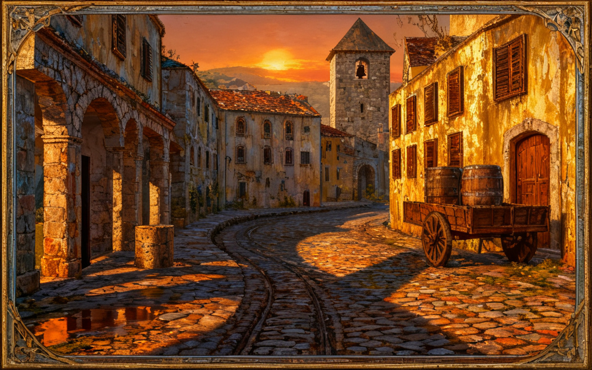
0.03$ · 39.5s
depth → FLUX depth
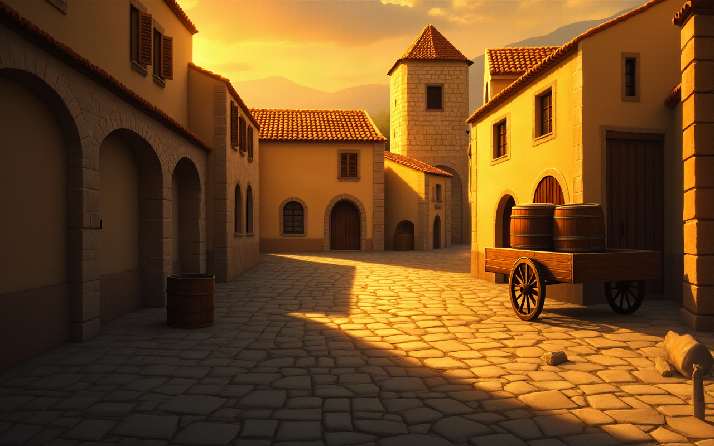
0.03$ · 192.0s
02_plaza
base clay (greybox 3D)
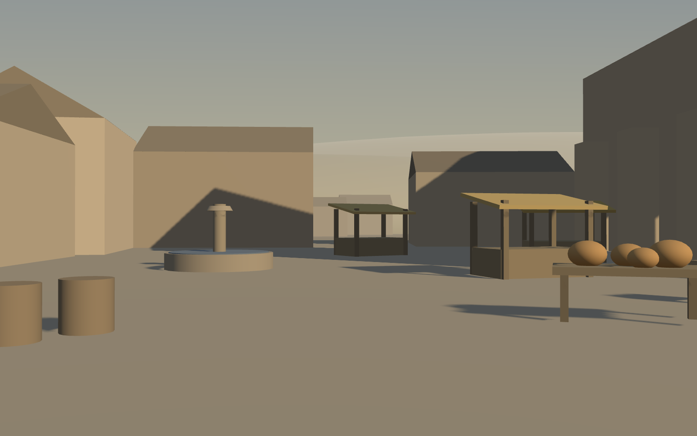
SVG a mano → gpt-image-2 (baseline)
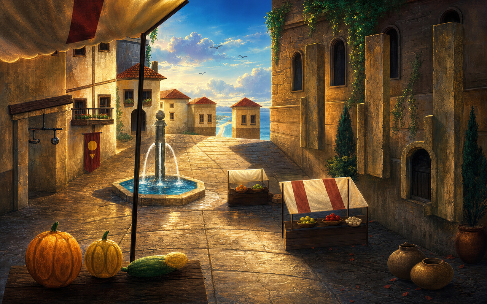
clay → gpt-image-2
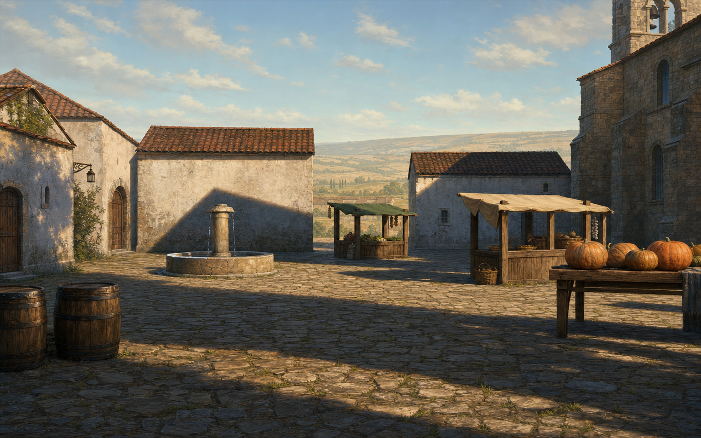
0.17$ · 194.7s
clay → seedream4
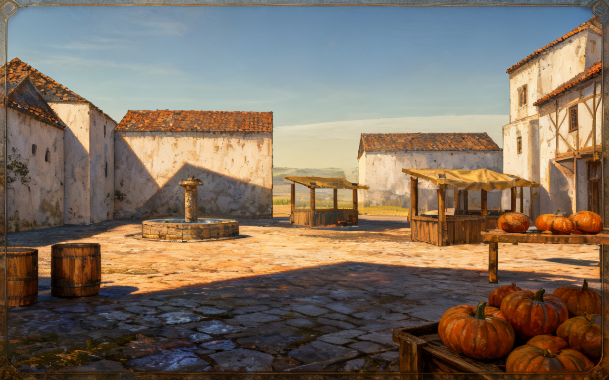
0.03$ · 25.9s
depth → FLUX depth
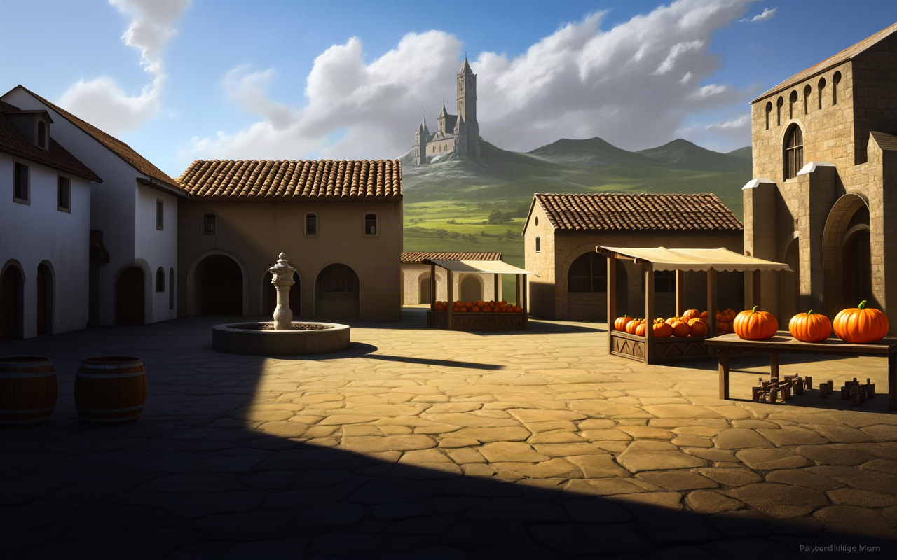
0.03$ · 225.7s
05_puerto
base clay (greybox 3D)
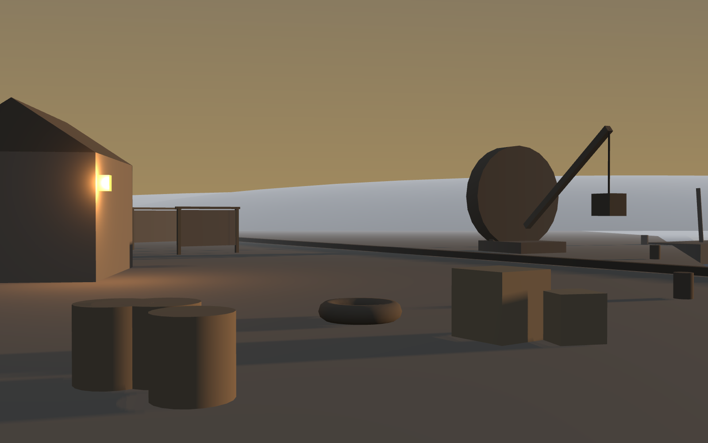
SVG a mano → gpt-image-2 (baseline)
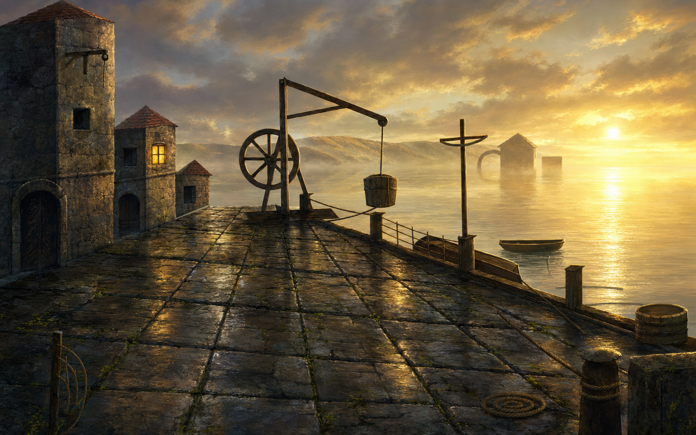
clay → gpt-image-2
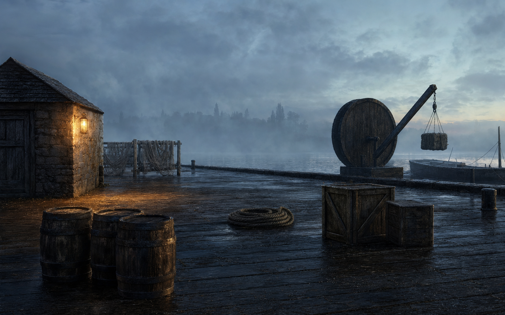
0.17$ · 140.5s
clay → seedream4
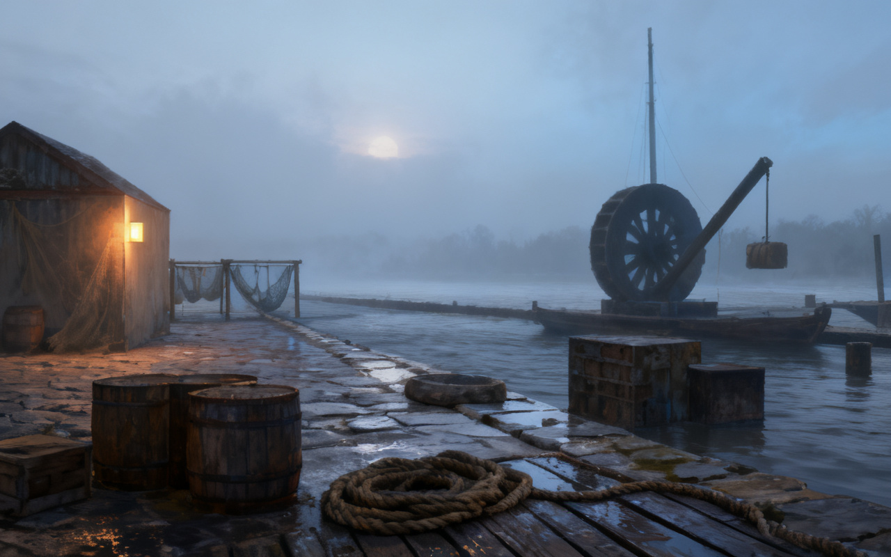
0.03$ · 31.5s
depth → FLUX depth
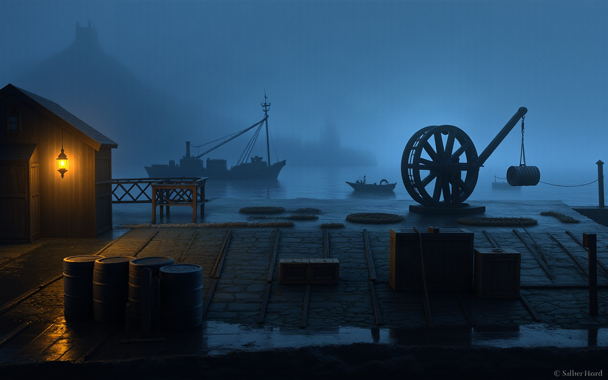
0.03$ · 77.8s